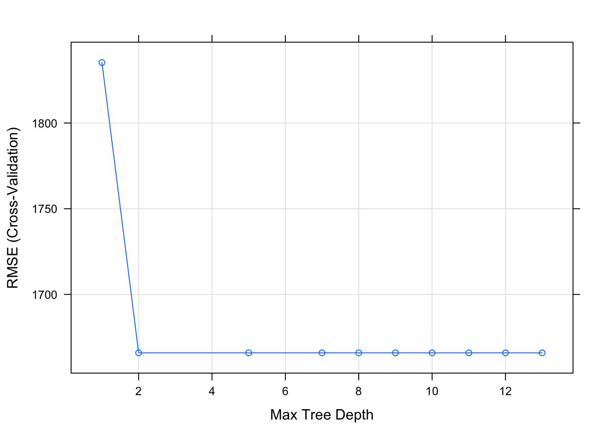
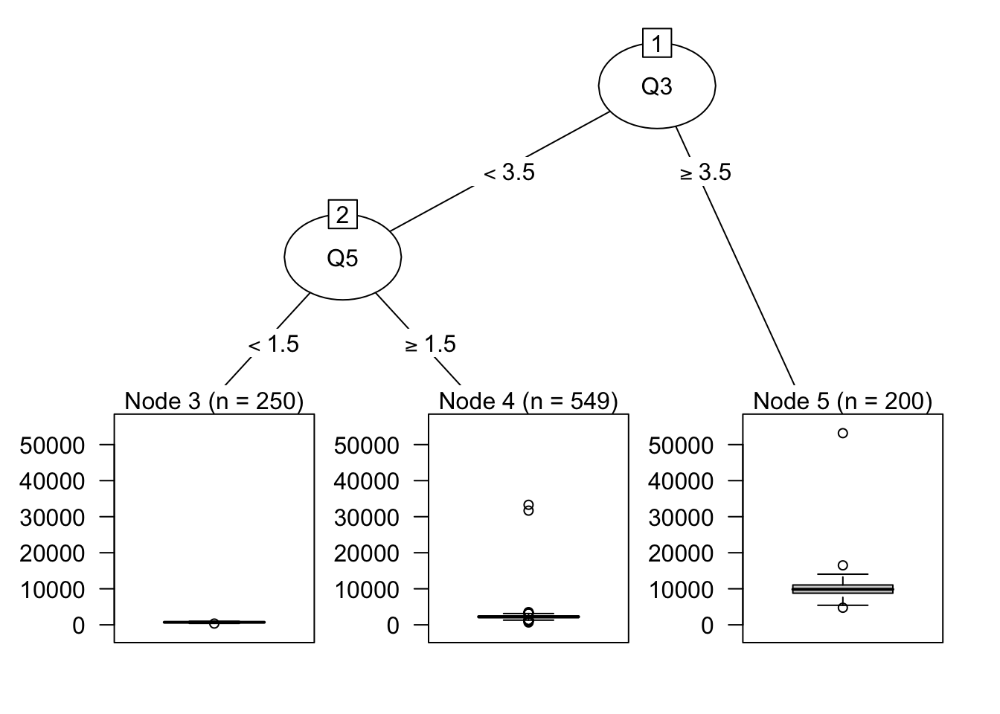
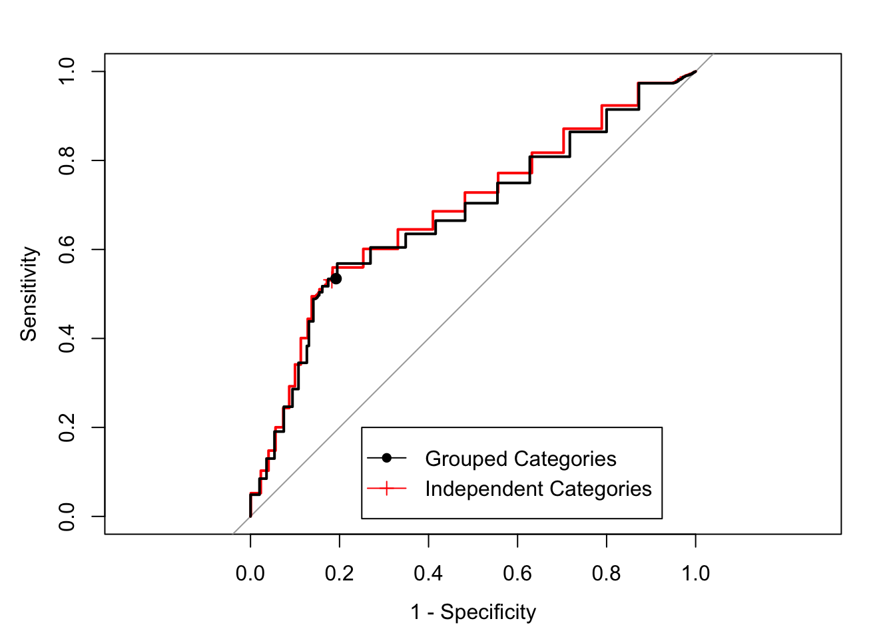
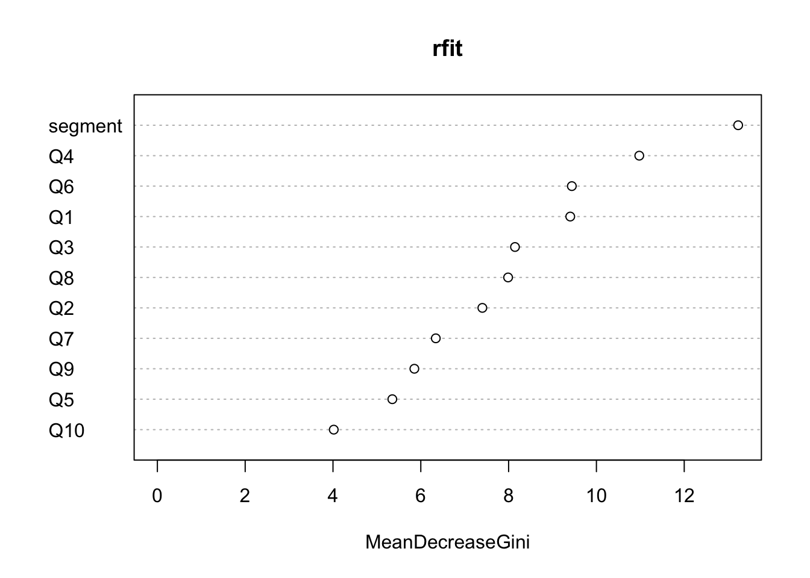
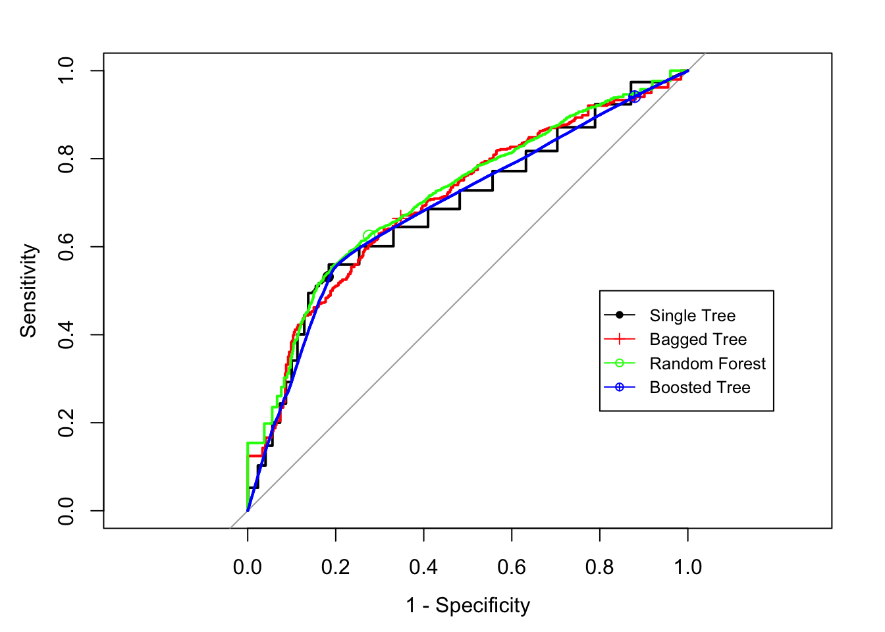

第12章 树模型
树模型可以用于回归和判别。这类模型常被称为决策和回归树（CART：Classification And Regression Trees），是经典的机器学习算法，也是最广泛使用的工具。和线性模型相比，树模型能够较好的捕捉到非线性关系。
CART可以用来指代广义的树模型，有时也特别指代Breiman最初提出的建立分类回归树的算法[72]。在Breiman之后又有很多新的算法出现，比如ID3、C4.5和C5.0，这几个都是Ross Quinlan提出的。是C4.5的改进版本，但由于C5.0还没有开源，因此C4.5算法依然非常流行。原始的CART算法只针对二分类的应变量，但是C4.5能处理多分类结果。CART使用Gini系数准则，C4.5使用熵。CART通过复杂性成本模型来对树进行剪枝，通过交互校验来估计参数；C4.5使用的是一个从二项置信区间衍生出的单通算法。在对缺失值的处理上，CART使用的是代理切分。对于每一个切分，模型会计算一系列的备选方案（称为代理切分）。代理切分是指与树中实际切分结果相类似的备选切分方案，如果一个代理切分对原始切分的近似效果良好，那么当原始切分的预测变量有缺失值时，代理切分就可以发挥作用。在实际应用中，树中的每一个切分都可以事先计算一些代理切分。C4.5算法不是直接填充缺失值或寻找替代，而是用概率知识把信息增益率的求解进行一些变化。
不太大的决策树简洁明了，容易解释。但是简单的树表现不一定好，复杂的树（比如之后会讲到的集成方法）效果大为提高，但过程如同黑箱，无法解释。所以建模者需要在解释性和精确性之间进行权衡。之所以称其为“树”当然因为结构有类似之处，只是决策树的方向和真实的树相反，根在上，叶在下。一棵决策树从单个根节点开始划分为几个不同的枝桠，从⽽产生更多的节点,在每个节点都可以决定是不是要继续划分，如果停止则该节点就是叶节点，若继续就是枝节点接着分裂产生下一层新节点。每个⾮叶节点都牵扯到决定接下来选择哪根树枝。叶节点包含 最终“决策”，将该样本归于哪个最终类或者取值。树模型中有如下几个重要的定义：

男神分类器
- 分类树：用于预测离散型结果的树
- 回归树：用于预测连续型结果的树
- 分裂点：每个非叶节点的处都有一个分裂点用来决定样本的走向（如：年龄<=25；25<年龄<=35；年龄>35）
- 根节点：最开始的包含所有观测的节点
- 叶节点（或者终节点）：包含样本的最终“决策”，没有分裂点
- 节点的度：一个节点含有的子树的个数称为该节点的度；
- 树的度：一棵树中，最大的节点的度称为树的度；
- 修剪：移除一些不必要的分裂点的过程，这是和分裂相反的过程
- 树枝（或子树）：非终节点下的一个完整旁支
- 亲节点和子节点：亲节点分裂后得到子节点
比如上面的简易男神分类器（分类器纯属虚构，如有雷同，纯属巧合）：长相是根节点同时也是分裂点；年龄和经济状况是分裂点; 长相这个节点的度是2；整棵树的度是4；最后小鲜肉等所在的那些节点是终节点；如果我们将王XX那个枝桠移除，就是修剪；长相是年龄和经济状况的亲节点，反之年龄和经济状况是长相的子节点。
树模型和规则模型之所以成为非常流行的建模工具有下面几个原因：
- 能处理变量个数相对于观测个数很大情况
- 对冗余变量具有抗性
- 小型的树非常容易解释（但一旦树结构复杂或者使用集成方法时模型变得无法解释）
- 根据它们建立模型时采用的逻辑，它们能有效地处理各种类型的预测变量（稀疏的，偏态的，连续的，分类的，等等），而不需要对这些变量事先进行预处理。此外，这些模型没有任何变量分布的假设，而在回归模型中通常有分布假设
- 这些模型可以有效地处理缺失值，并内嵌有特征选择的功能，这一点在很多实际建模问题中非常有用
单棵树或简单规则模型具有局限性，其中最重要的就是模型不稳定以及预测能力比较差。数据中的微小变动可能会引起树或规则结构的巨大变化。单棵树定义的一系列的矩形区域过于简单，一旦因变量与预测变量之间的关系不能充分地通过矩形子空间来进行表达， 那么树模型和规则模型将产生比其他模型更大的预测误差。为了克服这些缺点，研究者提出了集成模型，它们将许多棵树（或规则）进行组合。集成模型通常具有比单一的树模型好得多的预测表现。我们在之后会做介绍。
12.1 分裂准则
分裂节点的方式能够极大的影响树的精确度。回归树和分类树所使用的分裂准则非常不同。与回归树一样，分类树的目标是把数据划分为更小、同质性更强的组。在这里同质意味着分裂的节点更纯（即在每个节点有一个类的样本比例很大）。最原始的CART算法使用基尼系数作为分裂准则；ID3、C4.5以及C5.0使用交叉熵，也被称为信息或散度作为标准。下面逐一介绍这三个标准。
Gini系数
基尼（Gini）系数[72]用来衡量一个集合样本的杂质（我们希望的是更高的纯度，更少的杂质）。对于二分类问题，给定节点的基尼系数定义为：
\[p_{1}(1-p_{1})+p_{2}(1-p_{2})\]
其中\(p_{1}\)和\(p_{2}\)分别为类1、类2的概率。不难看出，当集合样本纯度很高时，某一类概率趋近于0，基尼系数最小。相反，当\(p_{1}=p_{2}=0.5\)时基尼系数最大，在这种情况下，节点的纯度最小。我们来看一个例子，假设我们想要判定哪些学生是计算机专业的，下面是用性别这个变量得到的简单分类树结果。

用性别判定计算机专业的学生
现在我们来计算用性别变量划分对应的Gini系数：
- 计算女生对应的Gini系数=\(\frac{1}{6}\times\frac{5}{6}+\frac{5}{6}\times\frac{1}{6}=\frac{5}{18}\)
- 计算男生对应的Gini系数=\(0\times1+1\times 0=0\)
可以用如下加权计算性别这个分裂总体的Gini系数：
\[\frac{3}{5}\times\frac{5}{18}+\frac{2}{5}\times 0=\frac{1}{6}\]
亲节点中50个观测的Gini系数是：\(\frac{1}{2}\)。很容易得出，经过性别这个分裂点后Gini系数从原来的\(\frac{1}{2}\)降至\(\frac{1}{6}\)，该分裂点对降低Gini的贡献就是\(\frac{1}{3}\)。算法会选择对Gini系数减小最有效的的分裂。
信息增益
看下面二分类问题中三个节点内的样本，哪个最容易描述？显然是C，因为C中所有的样本都是一类的，这样描述起来需要的信息最少。相反B需要更多的信息，A需要的信息最多。换句话说，C的纯度最高，B次之，A的纯度最差。我们可以这么说，纯度更高的节点描述起来需要的信息更少。反之，纯度更低的节点描述起来需要的信息更多。

信息理论就是为了衡量系统的无序度的，无序的度量也叫做熵。如果某个节点对应的样本全都是一类（如C）,其熵就是0。如果某个节点中各类样本比例是50%－50%，那么熵就是1。熵自然是越小越好。
熵（Entropy）的计算公式如下：
\[Entropy=-plog_{2}p-(1-p)log_{2}(1-p)\]
这里p是其中一类样本的比例。熵也能用来分裂分类树节点。其选择和亲节点以及其它分裂点相比熵最小的那个分裂。计算某个分裂的熵也是对每个分裂后子节点熵的加权平均。比如之前对50个学生的分类树：
- 亲节点中50个学生对应的熵是：\(-\frac{25}{50}log_{2}\frac{25}{50}-\frac{25}{50}log_{2}\frac{25}{50}=1\)，这里1表明节点纯度是最低的，也就是各类样本占一半。
- 对应性别这个分裂的熵计算分为3步：
- 女生对应的熵：\(-\frac{5}{30}log_{2}\frac{5}{30}-\frac{25}{30}log_{2}\frac{25}{30}=0.65\)
- 男生对应的熵为0，因为\(p=1\)
- 性别这个分裂对应的熵为上述两个的加权平均：\(\frac{3}{5}\times 0.65+\frac{2}{5}\times 0=0.39\)
可以看到，分裂将原先的熵从1降到0.39。
最小化SSE
目前为止我们讨论了对于分类树（离散应变量）情况的分裂准则。下面我们介绍回归树使用的分裂准则。构建回归树有许多不同的准则，其中最古老也最常用的是最小化SSE。对于回归问题，假设要将数据集\(S\)分成两组\(S_{1}\)和\(S_{2}\)，其中\(S_{1}\)和\(S_{2}\)的选取需要使得整体的误差平方和达到最小：
\[SSE=\Sigma_{i\in S_{1}}(y_{i}-\bar{y}_{1})^{2}+\Sigma_{i\in S_{2}}(y_{i}-\bar{y}_{2})^{2}\]
式中\(\bar{y}_{1}\)和\(\bar{y}_{1}\)是\(S_{1}\)和\(S_{2}\)组内训练集因变量的的平均值。接下来分别在\(S_{1}\)和\(S_{2}\)中， 模型继续搜索预测变量和切分点，以使得SSE达到最大的缩减。由于回归树的这一过程本质上是递归的切分，因此这种方法也通常称为递归划分。
看看下面这个简单的回归树，对10个学生以性别为分裂点，对身高做回归：

- 女生对应身高测量的SSE为：136
- 男生对应身高测量的SSE为：32
- 性别这个分裂对应的SSE为这两个SSE之和：168
亲节点中10个观测的SSE是：522.9。经过性别这个分裂点后SSE从原来的522.9降至168。
如果还有另外一种可能的分裂方式，用专业来划分，结果如下：

这种情况下：
- 女生对应身高测量的方差为：184
- 男生对应身高测量方差为：302.8
- 专业这个分裂对应的方差为之前两个方差的加权和：486.8
比较性别和专业两个不同的分裂，之前性别这个分裂点将SSE从原来的522.9降至168；专业这个分裂点将SSE降至486.8。如果用最小化SSE准则，应该选择使用性别为分裂点。
上面提到的这三种分裂准则是建立树模型的基础。
12.2 树的修剪
树模型面对的主要挑战是过度拟合。假设我们对决策树的参数没有任何限制，那么得到的树模型在训练集上的准确度将会是100%，因为每个终结点将只对应一个样本。因此，防止过度拟合是创建树模型的关键所在。总的说来可以通过下面两种方法来实现这一点：
- 对树的大小进行限制
- 对树进行修剪
现在我们对上面两点逐一展开。
限制树的大小
可以通过一些参数来限制树的大小。
- 每个节点处的最小样本量：通过定义节点处的最小样本量可以防止终结点只有一个样本的情况。这里样本量的设置可以作为调优参数。如果设置的样本量太大，那么会导致拟合不足，如果样本量太小，又会过度拟合。在严重类失衡的情况下，最小样本量的设置可能需要小一些，因为某一类样本本身数目就很少。
- 最大树深度：如果树生长的过深，那么模型就会过度拟合特定的样本。这也是一个需要调优的参数。
- 最大终结点数目：对终结点数目的限制和对树深度的限制是类似的，可以取代使用。因为这两者是成正比的。 每个分裂考虑的变量个数：在每一层级寻找最优分裂点的时候使用的变量是随机抽取的。通常情况下，取变量个数的平方根效果最好，这也是R种函数的默认设置。但我们还是应该对该参数在变量个数的30%~40%区间内调优。
另外一种方法是先让树充分生长，然后再回过头移除一些不显著的树枝，以回到一个较小的深度。背后原理是先让树在训练集上过度拟合，然后通过测试集对树进行调整以校正过度拟合，这里树模型在测试集上的表现代表了其在新样本上的表现。下面介绍实现这一目的几种常见方法。

- 代价-复杂度调优
Breiman等的论文中采用的剪枝过程称为代价-复杂度调优[72]。这是针对回归问题的修剪方法。也就是在原来SSE的基础上加上一个关于终节点数目的罚函数，通过一个调优参数控制罚函数的权重：
\[SSE_{c_{p}}=SSE+c_{p}\times 终节点数目\]
其中\(c_{p}\)被称为复杂度参数。该方法对于一个给定的\(c_{p}\)值，我们希望寻找最小的剪枝后的树，以使得惩罚后的误差达到最小。 给定\(c_{p}\)的取值时，Breiman等给出了寻找最优树的理论和算法[72]。与之前讨论过的收缩方法类似，较小的罚倾向于产生较大的树。\(c_{p}\)取值很大时生成的树可能只有一次分裂，甚至根本没有分裂。后一种情况意味着在当前选择的复杂度参数下， 没有任何一个预测变量能充分地解释因变量的变异。
为了找到最优的剪枝树，需要在一系列的\(c_{p}\)取值上对数据进行计算， 这一过程会对每一个\(c_{p}\)值计算一个 SSE。但我们知道的是，当选择了一个不同的样本时，SSE的数值也会有所变化。为了体现每一个\(c_{p}\)取值下 SSE 的变异，Breiman等建议使用类似于第四章中的交叉验证方法[72]。他们还提出了一倍标准差准则作为优化准则，来给出最简单的树：在一倍的标准差之内，找到最简单的使得绝对误差最小的树。另外一些方法则是选择使得数值上误差达到最小的树尺寸[73]。
- 降低误判率修剪
该修剪方法最早由Quinlan提出[74]。这是最容易理解的修剪方法。树的所有分裂点都纳入修剪的候选名单，对某个分裂点进行修剪意味着将该分裂点下的整个子树都去掉，将该节点设置为叶节点（或者终节点）。这里数据集将被分成3个子集：
（1）用于训练完整的树；
（2）用于修剪；
（3）用于测试最终模型。
如果对某个节点修剪后的的树在第（2）个子集上得到的准确度不小于原来完整的树在（2）上的精确度，那么就将该节点设置为叶节点。否则保留该节点。该算法的好处在于计算上较简单。当子集（2）的样本量比用于训练的子集（1）小很多时，该方法存在过度修剪的风险。许多研究人员发现，这类基于判别误差的修剪方法得到的模型准确度比那些基于树大小得到的模型高[75]。
- 误判率-复杂度修剪
由于每个分裂节点对降低误判率有潜在的作用，但节点越多，意味着树越复杂。该方法就是在这两者之间权衡。假设某个分裂节点\(t\)，该节点对应的整个子树为\(T\)。该节点修剪后在降低误判率上的损失可以用下面的误判率损失衡量：
\[R(t)=r(t)\times p(t)\]
其中\(r(t)\)是某个节点的误判率：
\[r(t)=\frac{该节点下误判样本的数目}{该节点下所有样本的数目}\]
\(p(t)\)是该节点样本占总样本的比例：
\[p(t)=\frac{该节点的样本数目}{总体样本数目}\]
根植于节点\(t\)的子树\(T\)对应的误判率损失是：
\[R(T)=\Sigma_{i是子树T的叶节点}R(i)\]
该节点对应的误判率-复杂度定义为：
\[a(t)=\frac{R(t)-R(T)_{t}}{子树T的叶节点数目-1}\]
\(a(t)\)可以看成是子树\(T\)对应价值的衡量。基于上面介绍的一些度量，该修剪过程大致如下[76]：
- 对每个分裂节点计算对应的价值度量\(a\)
- 剪去价值最低的节点
- 不断重复上面的过程，每次都产生一棵修剪后的树，这些树组成“森林”
- 在这片森林中选出精确度最高的树
- 最小化误判率修剪
该方法由Niblett和Brotko在1991年提出[77]。这是一个自下而上的过程，目的在于寻找能够最小化模型在新数据上预期误判率的树。对于某个分裂点t，如果该节点修剪成叶节点后，其下所有的样本都被预测为c类，那么该节点对应的修剪预期误判率为：
\[E(t)=\frac{n_{t}-n_{t,c}+k-1}{n_{t}+k}\]
其中：
\[k=类别数目\] \[n_{t}=节点t的样本总数\] \[n_{t,c}=节点t下c类样本的数目\]
基于上述定义，该修剪算法过程如下[75]：
- 在树的每个非叶节点处，计算对该节点修剪后的预期误判率
- 计算如果该节点下的子树未经修剪得到的预期误判率
- 如果修剪使得预期误判率提高，那不修剪，否则修剪
12.3 回归树和决策树
12.3.1 回归树
我们现在进一步介绍回归树的构建过程[78]。建立回归树大致分两步：
- 将自变量\(X_1,X_2,\dots,X_p\)所有可能取值构成的自变量空间划分成\(J\)个彼此不重叠的区域：\(R_1,R_2,\dots,R_J\)
- 落入某个区域\(R_j\)的新样本对应相同的预测值，即训练集中\(R_j\)内所有观测的平均
一个及其简化的例子，假设我们就用性别划分成两个区域\(R_1\)（女）和\(R_2\)（男）：
那么，落入\(R_1\)的训练集样本均值为163，落入\(R_2\)的训练集样本均值为176。那么对新样本，如果是女生，树模型预测的身高就是163，男生则为176。第2步其实很好理解。现在我们更详细的讲解第1步，也就是怎么划分出区域\(R_1,R_2,\dots,R_J\)。
理论上说，划分的区域可以是任何形状，但这里为了简化问题便于解释，我们选择将自变量空间划分成高维矩形，或者说高维盒子。对于回归模型划分目标是最小化之前讲过的RSS。考虑所有可能的划分在现实问题中几乎不可能，这和之前特征选择中讲到的穷举法是一个道理，理论上最优但是实际不可操作。所以建造树模型的时候使用的是从上到下（top-down）的贪婪算法——递归二元分割。该方法从树的根节点开始逐步向下分割自变量空间。每次分裂都产生2条树枝，所以叫做“二元分割”。之所以说该算法贪婪是因为在建造树过程中的每一步，都只是针对当前情况寻找最优分割方式而没有考虑之后在这之后的分裂。
首先在根节点处选择一个变量\(X_j\)和分裂点\(s\)，将自变量空间划分成下面两个空间：
\[R_{1}(j, s)=\{X|X_j<s\}\ 和\ R_{2}(j, s)=\{X|X_j\geq s\}\] 计算相应分裂后RSS的减少量。对不同的\((j,s)\)搜索能最大程度减少RSS的组合，也就是最小化下面式子：
\[\Sigma_{i:x_i\in R_1(j,s)}(y_i-\hat{y}_{R_{1}})^2+\Sigma_{i:x_i\in R_2(j,s)}(y_i-\hat{y}_{R_{2}})^2\] 其中\(\hat{y}_{R_1}\)是\(R_1\)中训练样本的应变量均值，\(\hat{y}_{R_2}\)是\(R_2\)中训练样本的应变量均值。优化上面的式子很容易，尤其当\(p\)不是很大的时候。
接下来就在这两个生成的子区域中按照同样的方式继续寻找最优化该区域RSS的分裂。注意这里只在新的子区域内优化。这个过程一直延续到满足设定的停止准则，比如区域内的样本量少于5，或者RSS降低的百分比小于1%。大家可以脑补下这个动态的过程，节点不断分裂出两个新的子节点直到所有的节点满足停止条件。这就好像一棵树在不断生长。

在R中有好几个包能够用来建造回归树，如ctree、rpart和tree。rpart是广为使用的一个建造单棵树的包，切分方法基于CART，使用rpart()函数，用公式表达法。rpart()有若干调节参数，可以通过rpart.control选项设定。或者你可以使用之前反复讲到的神器caret包的train()函数，通过其为接口调用rpart()函数，方便进行交互校验。 train()在此情况下常用的函数设定的参数是复杂度参数（cp）和最大节点深度（maxdepth）。为了对 CART树的复杂度参数进行调优，train()中的方法选项应该设定为method = "rpart"。为了对最大深度进行调优，方法选项则应为method = "rpart2"：
library(rpart)
library(tree)
dat <- read.csv("/Users/happyrabbit/Documents/GitHub/DataScientistR/Data/SegData.csv")
# 对数据进行一些清理，删除错误的样本观测，消费金额不能为负数
dat <- subset(dat, store_exp > 0 & online_exp > 0)
# 将10个问卷调查变量当作自变量
trainx <- dat[, grep("Q", names(dat))]
# 将实体店消费量和在线消费之和当作应变量
# 得到总消费量=实体店消费+在线消费
trainy <- dat$store_exp + dat$online_exp
set.seed(100)
rpartTune <- train(trainx, trainy,
method = "rpart2",
tuneLength = 10,
trControl = trainControl(method = "cv"))
plot(rpartTune)
最大树的深度大于2貌似RMSE就不再变化了。这里我们就用深度为2来建立树：
rpartTree <- rpart(trainy ~ ., data = trainx, maxdepth = 2)你可以通过print()查看相应的规则：
print(rpartTree)## n= 999
##
## node), split, n, deviance, yval
## * denotes terminal node
##
## 1) root 999 15812720000 3479.113
## 2) Q3< 3.5 799 2373688000 1818.720
## 4) Q5< 1.5 250 3534392 705.193 *
## 5) Q5>=1.5 549 1919009000 2325.791 *
## 3) Q3>=3.5 200 2436211000 10112.380 *可见，Q3和Q5被最终用来预测总花销。要对rpart生成的树绘制图形，可以使用partykit包先将rpart对象转换成party对象，然后再使用plot()：
library(partykit)
rpartTree2 <- as.party(rpartTree)
plot(rpartTree2)
12.3.2 决策树
决策树和回归树的思想是类似的，目标是把数据划分为更小、同质性更强的组。不同在于应变量是个分类变量而不是数值。这时，预测就不是基于平均而是基于每个类别样本的频数。叶节点的预测值就是落入相应区域训练集样本中频数最高的类别。决策树的分裂准则不是RSS，而是之间介绍的熵（Entropy）或者Gini系数。CART使用Gini系数准则，C4.5使用熵。CART通过复杂性成本模型来对树进行剪枝，通过交互校验来估计参数；C4.5使用的是一个从二项置信区间衍生出的单通算法。在对缺失值的处理上，CART使用的是代理切分。对于每一个切分，模型会计算一系列的备选方案（称为代理切分）。C4.5算法不是直接填充缺失值或寻找替代，而是用概率知识把信息增益率的求解进行一些变化。
当自变量是连续型时，确定最佳分裂点的划分过程很直接。当自变量是分类型时有两种处理方式：
不对分类变量进行变换，每个分类型自变量作为单独的个体输入到模型当中以便模型决定如何对值进行分组或分裂。这时可以对数据做更为动态的分裂，如分裂点一侧有两个或更多的组。为了进行这样的分裂，算法需要对自变量的类别按照某种方式进行排序。
分类型自变量先被重新编码为二元虚拟变量，这样将类别信息分解成独立信息块。每一个虚拟变量都融入各自的模型中。这样一来评估每个这些新自变量的方法就很简单，因为每个自变量仅有一个分裂点。
如果某些类对结果有强预测性，第一种方法可能更合适。然而，正如我们后面看到的，该选择会对模型的复杂度和模型性能有显著影响。在接下来的章节，我们将使用上面说的两种方法构建模型，以便评估那种方法更优。从业者需要根据哪一种方法更合适当前的问题来进行选择。
下面我们用不同的方法对服装消费者性别进行判定（这里是分类模型而非回归模型）：
library(caret)
library(pROC)
dat <- read.csv("/Users/happyrabbit/Documents/GitHub/DataScientistR/Data/SegData.csv")
# 将10个问卷调查变量当作自变量
trainx1 <- dat[, grep("Q", names(dat))]
# 将类别也作为自变量
# 这里用两种方法编码分类变量
# trainx1 不对消费者类别进行变换
trainx1$segment <- dat$segment
# trainx2 中的消费者类别被转化成虚拟变量
dumMod<-dummyVars(~.,
data=trainx1,
# 用原变量名加上因子层级的名称作为新的名义变量名
levelsOnly=F)
trainx2 <- predict(dumMod,trainx1)
# 性别作为应变量
trainy <- dat$gender构建分类树的R包也有很多，这里讲主要的rpart包。
caret包中的train()函数将建立单棵树的一些函数包装起来，我们可以用它来训练树模型。我们分别对分类变量两种编码方法进行建模比较：
set.seed(100)
rpartTune1 <- caret::train(trainx1, trainy, method = "rpart",
tuneLength = 30,
metric = "ROC",
# 规定了预留数据集以及需要计算那些模型表现度量（如敏感度，特异度和AUC）。
trControl = trainControl(method = "cv",
summaryFunction = twoClassSummary,
classProbs = TRUE,
savePredictions = TRUE))
rpartTune1## CART
##
## 1000 samples
## 11 predictor
## 2 classes: 'Female', 'Male'
##
## No pre-processing
## Resampling: Cross-Validated (10 fold)
## Summary of sample sizes: 899, 900, 900, 899, 899, 901, ...
## Resampling results across tuning parameters:
##
## cp ROC Sens Spec
## 0.000000000 0.7005168 0.6498377 0.7062626
## 0.008350085 0.7086874 0.6297727 0.7354040
## 0.016700170 0.6856826 0.5411688 0.8026768
## 0.025050255 0.6801479 0.5106494 0.8496465
## 0.033400340 0.6801479 0.5106494 0.8496465
## 0.041750425 0.6801479 0.5106494 0.8496465
## 0.050100510 0.6801479 0.5106494 0.8496465
## 0.058450595 0.6801479 0.5106494 0.8496465
## 0.066800680 0.6801479 0.5106494 0.8496465
## 0.075150765 0.6801479 0.5106494 0.8496465
## 0.083500850 0.6801479 0.5106494 0.8496465
## 0.091850936 0.6801479 0.5106494 0.8496465
## 0.100201021 0.6801479 0.5106494 0.8496465
## 0.108551106 0.6801479 0.5106494 0.8496465
## 0.116901191 0.6801479 0.5106494 0.8496465
## 0.125251276 0.6801479 0.5106494 0.8496465
## 0.133601361 0.6801479 0.5106494 0.8496465
## 0.141951446 0.6801479 0.5106494 0.8496465
## 0.150301531 0.6801479 0.5106494 0.8496465
## 0.158651616 0.6801479 0.5106494 0.8496465
## 0.167001701 0.6801479 0.5106494 0.8496465
## 0.175351786 0.6801479 0.5106494 0.8496465
## 0.183701871 0.6801479 0.5106494 0.8496465
## 0.192051956 0.6801479 0.5106494 0.8496465
## 0.200402041 0.6801479 0.5106494 0.8496465
## 0.208752126 0.6801479 0.5106494 0.8496465
## 0.217102211 0.6801479 0.5106494 0.8496465
## 0.225452296 0.6553102 0.5427922 0.7678283
## 0.233802381 0.6553102 0.5427922 0.7678283
## 0.242152466 0.5609993 0.7828571 0.3391414
##
## ROC was used to select the optimal model using the largest value.
## The final value used for the model was cp = 0.008350085.上面是不对分类变量进行编码的情况。这里cp指的是复杂度参数（complexity parameter）。是树生长的停止准则，cp = 0.01意味者相应分裂度量（Gini，熵等）每一步分裂都需要比之前提高0.01，在交互校验结果中不满足0.01提升的部分会被修剪掉。
下面我们接着对将分类变量进行编码后的数据集进行训练：
rpartTune2 <- caret::train(trainx2, trainy, method = "rpart",
tuneLength = 30,
metric = "ROC",
# 规定了预留数据集以及需要计算那些模型表现度量（如敏感度，特异度和AUC）。
trControl = trainControl(method = "cv",
summaryFunction = twoClassSummary,
classProbs = TRUE,
savePredictions = TRUE))rpartRoc <- roc(response = rpartTune1$pred$obs,
predictor = rpartTune1$pred$Female,
levels = rev(levels(rpartTune1$pred$obs)))
rpartFactorRoc <- roc(response = rpartTune2$pred$obs,
predictor = rpartTune2$pred$Female,
levels = rev(levels(rpartTune1$pred$obs)))
plot(rpartRoc, type = "s", print.thres = c(.5),
print.thres.pch = 3,
print.thres.pattern = "",
print.thres.cex = 1.2,
col = "red", legacy.axes = TRUE,
print.thres.col = "red")##
## Call:
## roc.default(response = rpartTune1$pred$obs, predictor = rpartTune1$pred$Female, levels = rev(levels(rpartTune1$pred$obs)))
##
## Data: rpartTune1$pred$Female in 13380 controls (rpartTune1$pred$obs Male) < 16620 cases (rpartTune1$pred$obs Female).
## Area under the curve: 0.667plot(rpartFactorRoc,
type = "s",
add = TRUE,
print.thres = c(.5),
print.thres.pch = 16, legacy.axes = TRUE,
print.thres.pattern = "",
print.thres.cex = 1.2)##
## Call:
## roc.default(response = rpartTune2$pred$obs, predictor = rpartTune2$pred$Female, levels = rev(levels(rpartTune1$pred$obs)))
##
## Data: rpartTune2$pred$Female in 13380 controls (rpartTune2$pred$obs Male) < 16620 cases (rpartTune2$pred$obs Female).
## Area under the curve: 0.6547legend(.75, .2,
c("Grouped Categories", "Independent Categories"),
lwd = c(1, 1),
col = c("black", "red"),
pch = c(16, 3))
可以看到，对于使用CART构建的树，对消费者类别变量编码或者不编码并不影响对受访者性别做预测。同样也可以通过partykit包对最终的模型绘制图形。这里不展示结果：
library(partykit)
plot(as.party(rpartTune1$finalModel))单棵树很直观，容易解释。但它有两个缺点：
- 和很多回归模型相比精确度差
- 非常不稳定，数据微小的变化会导致模型结果很大的变化
将不同的决策树聚合起来能够解决这两个问题，比如下面要介绍的装袋树，随机森林和助推树就是这样的思想。这些模型的表现和单棵树相比显著提高。
12.4 装袋树
Bootstrap 样本是对数据进行有放回随机抽样得到的样本[79]。这意味着，当一个样本点被选中时，它有可能会在将来的抽取中继续被选中。Bootstrap 样本和原数据的样本量一样。因此，一些样本可能被抽到过很多次，而另一些则可能没有被选到。没有被选到的样本被称为“袋外样本“（out-of-bag）。这在统计学史上是一个看似平淡无奇，但实际上具有突破性意义的思想。在很多难以甚至不可能直接计算标准差的情况下能够用bootstrap来对估计标准差。很长一段时间我并不理解这样一种流氓的方法怎么会大受追捧，这里追捧的人指的不是一般群众，而是象牙塔里那些根正苗红的统计教授。这个方法就像聚宝盆，一直不停的有放回抽样。一个极端的情况，假如你只有1个样本，难道你不停有放回抽样就能得到大样本了？当然不是，这是对该方法的扭曲。bootstrap要在样本量足够多的时候才最有效。

bootstrap示意图
之前介绍的单棵树最大的问题就是结果不稳定。直观的说，假如你把样本随机分成两部分，用各个子集建造树模型，得到的两棵树可能大相径庭。相反，对于一个稳定的模型，其在这两个数据集上拟合结果应该是很相近的。传统的参数回归模型相对稳定性高，比如线性回归。
在20世纪90年代，集成方法（即将许多模型组合起来进行预测的模型）开始出现。但当样本量n较之于变量个数p而言比较大时，该方法可以作为降低模型方差的一般方法。装袋法（Bagging，bootstrap aggregation 的缩写）最初由 Leo Breiman 提出，它是最早发展起来的集成方法之一（Breiman 1996a）。装袋法是一种利用 bootstrap的通用方法，可用于任何回归（或分类）模型来构建集成组合。
假设n个独立随机变量\(Z_1,\dots,Z_n\)，每个的方差是\(\sigma^2\)。那么它们的均值\(\bar{Z}\)对应的方差为\(\frac{\sigma^2}{n}\)。这个统计学中的基本性质大家应该都很熟悉。也就是说，对观测取平均可以减小方差。因此一个很自然的减小模型估计方差，增加模型预测精确度的方法就是让模型作用与不同的训练集，然后将模型结果取平均。假设我们将模型应用于B个训练集，得到估计\(\hat{f}^1(x),\hat{f}^2(x)\dots,\hat{f}^B(x)\)，我们可以用：
\[\hat{f}_{avg}(x)=\frac{1}{B}\Sigma^B_{b=1}\hat{f}^b(x)\] 作为最终模型结果。当然这严格说来无法实现，因为我们只有一个训练集。这就是需要bootstrap的地方了。我们将每个bootstrap样本当作训练集合。这种方法的构建非常简单，它包含下面算法中所述的步骤：
算法：装袋法
- 对 i=1 到 B 执行
- 从原数据中生成bootstrap样本
- 在生成的bootstrap样本上建立未修剪的树
- 终止
集成组合中的每一个模型都对新样本进行一次预测，然后将这些预测进行平均。每一次bootstrap重抽样迭代中，选中的样本点被用来建立模型，而袋外样本则被用于预测。对于回归树，装袋法很好理解，就是将不同预测值平均。那么分类树呢？在这种情况下有若干可能的办法。这里讲最简单的一种。对于测试集的某个样本，我们可以记录下每棵树对其判定的类别，这样我们得到B个判定类别，然后取票数最高的那个。很自然，这里树的数目B是一个需要调优的重要参数。

装袋树示意图
装袋法的优势
装袋法模型相对于没有装袋的模型具有若干优势。
首先，装袋法通过模型的聚集过程有效地降低了预测的方差。对于那些预测值不稳定的模型，例如回归树，将不同版本的训练集进行聚集，可以减小预测的方差，从而使得预测值更加稳定。假设我们有10个bootstrap样本各自生成了一棵最大深度的树。这些树在结构上有所差异，每棵树对新样本的预测都有所不同。如果将这10棵树的预测结果进行平均作为新样本的预测，那么这一平均值将比单棵树的预测方差更小。这意味着，如果我们产生另一组bootstrap样本，在其中每一个样本上建立一个模型，然后对所有模型的预测值进行平均，那么得到的结果将与前一个装袋模型的结果相类似。
装袋模型比未装袋的模型具有更好的预测效能。如果建模的目标是得到最优的估计而不是解释树的结构，那么装袋法更有优势。对稳定、方差小的模型（如回归，MARS）进行装袋则只会对其预测效能带来较小的改进。在预测结果具有内在的不稳定性的情况下，可以用装袋法进行改进。虽然理论上装袋法不仅限于树模型，但是其对树模型的改进效果最好，尤其是决策树，这就是对症下药。
其次，装袋法模型的另一个优势是它可以提供内在的预测效能估计。因为这里用的是bootstrap过程中剩下的袋外样本，它们并没有参与建模于是扮演着测试集的角色，可以用来评估模型的预测效能。因此，集成组合中的每个模型都可以通过袋外样本计算得到一个预测效能的估计，而对所有袋外效能估计进行平均就能计算出整个集成组合的预测效能。 这一结果通常与交叉验证或测试集验证的结果非常吻合，该误差估计称为袋外估计。平均说来，每棵树大约使用了2/3的样本，另外1/3的样本是袋外数据。这意味着，对于每个样本，在B次抽样中，大约会有B/3次是袋外数据，因而有对应的预测值。让这些预测值投票得到每个样本对应的预测。进一步可以计算所有样本的误差。可以证明当抽样的次数B足够大时，袋外样本误差几乎等价于留一校验误差。
对于基本的装袋法，用户可以选择bootstrap样本的数目。《应用预测模型（Applied Predictive Modeling）》[13]的作者指出， 通常模型的预测效能与迭代次数之间会出现指数递减的关系； 大部分预测效能的提升是由少数几棵树实现的。根据他们的经验，一直到50个bootstrap样本，模型都可能还会有微小的改进，如果迭代了50次代后模型的表现还是不令人满意，那就需要尝试使用其他更强大的集成预测方法，如随机森林和助推。
装袋法的局限
尽管装袋法通常都能改进不稳定模型的预测效能，但它同样有一些缺陷。 首先，是计算量。随着bootstrap 样本数目的增多，计算成本和内存需求也会相应增加。这一劣势可以通过并行计算来得到大部分的消减，原因是装袋的过程是非常容易并行化的。 回顾之前的介绍可以发现，每一个 boostrap 样本和相应的模型都是独立于其他样本和模型的。 这意味着每个模型都可以单独进行建模， 而只需在最后将所有模型的结果组合起来以生成最终的预测。类似能够并行化的还有随机森林模型。但是助推树不能，因为其集成方式不是独立的。
装袋法的另一个劣势在于解释性差，这是所有类似集成模型共同的劣势。通常也被称为黑箱模型。我们无法在装袋法中得到之前单棵回归树给出的简洁且易于描述的规则。然而，变量重要性依旧可以通过将单个模型的重要性得分集合起来得到。比如，我们可以记录有将某个变量用于分裂点的树中其导致RSS的减小，然后在所有的树上取平均。
下面我们展示如何用R建立装袋树，先得到自变量和应变量：
library(caret)
library(pROC)
dat <- read.csv("https://raw.githubusercontent.com/happyrabbit/DataScientistR/master/Data/SegData.csv")
# 将10个问卷调查变量当作自变量
trainx <- dat[, grep("Q", names(dat))]
# 将类别也作为自变量
# 不对消费者类别进行变换
trainx$segment <- dat$segment
# 性别作为应变量
trainy <- dat$gender大家可以自己对树的数目进行调优，这里我们用1000棵树：
set.seed(100)
bagTune <- caret::train(trainx, trainy,
method = "treebag",
nbagg = 1000,
metric = "ROC",
trControl = trainControl(method = "cv",
summaryFunction = twoClassSummary,
classProbs = TRUE,
savePredictions = TRUE))调优的结果如下：
bagTune## Bagged CART
##
## 1000 samples
## 11 predictor
## 2 classes: 'Female', 'Male'
##
## No pre-processing
## Resampling: Cross-Validated (10 fold)
## Summary of sample sizes: 900, 899, 901, 900, 900, 900, ...
## Resampling results:
##
## ROC Sens Spec
## 0.7016242 0.6642532 0.6522727
##
## 可以看到，最优的ROC比之前单棵树有所改进。ROC曲线上的最优点，也就是最靠近左上角的点对应敏感度（Sens）为0.66，特异度（Spec）为0.65。这里因为变量的个数并不多，所以改进不那么明显，在变量多的时候装袋树的表现可能远好过单棵树。
12.5 随机森林
我们已经知道装袋树使用了boostrap样本，但这些树之间并不是独立的，因为这些树的每个分裂点上都考虑了所有的自变量。可以想象，如果初始的样本量足够大，而且树模型可以充分刻画预测变量与因变量之间的关系，那么不同bootstrap样本生成的树应该具有类似的结构（特别是在树顶部分），因为它们背后的关系是相近的。这一特点被称为树相关性，它会使得装袋法不能最大限度地减少预测值的方差。这说明，装袋法对方差的缩减还可以进一步通过减小树之间的相关性得以提升。对树相关现象的数学解释，可以参见[73]。随机森林就是通过减少树的相关性在装袋树的基础上进行提高的。
从统计的角度来看，要减小预测变量之间的相关性，可以在建立树的过程中引入一定的随机性，使得每一棵树使用的变量有些不同。在Breiman发明装袋法后，有一些其他的作者通过在训练过程中加入随机性来进一步优化模型算法。由于树是装袋法中一个常见的模型，Dietterich[80]提出了随机选择切分点的想法，即在树的每一个分裂点处随机选择\(m\)个变量来生成树。另一种方法是随机选择变量的子集来构建整棵树[81, 82]。Breiman同样尝试了在响应变量中加入噪声来对树的结构进行扰动[83]。在对这些各种升级改版的装袋法进行研究之后，Breiman于2001年提出了随机森林[84]。随机森林建造树的时候，每个分裂处都会从所有\(p\)个变量中随机抽取\(m\)个，然后在其中选出最优的一个变量用于分裂。
通常情况下\(m=\sqrt{p}\)。比如这里是10个问卷调查的问题，那么每个分裂点出随机抽取用于候选的变量大约为4。在考虑每个分裂点的时候，算法都会随机挑选新变量，通过这种方式减小树之间的相关性。这对于变量数目多的情况更加有效，这里由于我们一共只有10个变量，大家之后会看到，随机森林算法对结果的改进并不是很明显。这里每次选择变量的个数也是一个调优参数。在数据集合很大变量个数又很多的时候，对该参数调优的过程计算量比较大。这里建议在\(m=\sqrt{p}\)附近取5个值先初步调优。森林中树的棵树是另外一个需要调优的参数。由于森林的规模越大，计算量就越大，通常情况下需要至少1000棵树，逐渐增加直到模型的效果没有改进。当模型表现趋于稳定后，增加更多的树没有什么帮助。
一般的基于树的随机森林算法如下：
基本的随机森林算法
- 选择模型数目B
- 对 i=1 到 B 执行
- 从原数据中生成一个bootstrap样本
- 在该样本上训练一个树模型
- 对每个分裂点执行
- 随机抽取m（<p）个预测变量
- 在这k个变量中选择能用于划分数据的最优变量
- 终止
- 对每个分裂点执行
- 使用通常的终止树模型的规则决定何时让树停止生长（不要修剪）
- 终止
随机森林和树的主要不同在于随机抽取m个预测变量。如果\(m=p\)，那么随机森林等同于装袋。当我们有大量相关的变量时，通常选择较小的m比较好。下面我们用caret包调优随机森林模型：
# 对入选的变量个数参数进行调优
mtryValues <- c(1:5)
set.seed(100)
rfTune <- train(x = trainx,
y = trainy,
# 指定随机森模型
method = "rf",
ntree = 1000,
tuneGrid = data.frame(.mtry = mtryValues),
importance = TRUE,
metric = "ROC",
trControl = trainControl(method = "cv",
summaryFunction = twoClassSummary,
classProbs = TRUE,
savePredictions = TRUE))随机森林调优结果，在这个例子中，变量的数目不多，随机森林调优过程得到的每次考虑的变量数目是1。最优的曲线下面积和装袋树相比又有所提高但是提高的程度不大：
rfTune## Random Forest
##
## 1000 samples
## 11 predictor
## 2 classes: 'Female', 'Male'
##
## No pre-processing
## Resampling: Cross-Validated (10 fold)
## Summary of sample sizes: 899, 900, 900, 899, 899, 901, ...
## Resampling results across tuning parameters:
##
## mtry ROC Sens Spec
## 1 0.7169190 0.5340584 0.8204545
## 2 0.7136964 0.6333766 0.7174747
## 3 0.7149947 0.6477922 0.6995455
## 4 0.7113993 0.6550325 0.6950000
## 5 0.7092069 0.6514286 0.6882323
##
## ROC was used to select the optimal model using the largest value.
## The final value used for the model was mtry = 1.得到调优参数之后也可以通过randomForest包拟合随机森林。由于装袋树只是随机森林的一种特殊情况，所以当你在随机森林函数中设置\(mtry=p\)时，就能得到装袋树。
library(randomForest)
rfit = randomForest(trainy ~ ., trainx, mtry = 1, ntree = 1000)可以通过importance()函数得到变量的重要性：
importance(rfit)## MeanDecreaseGini
## Q1 9.403995
## Q2 7.402103
## Q3 8.145370
## Q4 10.976084
## Q5 5.351417
## Q6 9.440028
## Q7 6.341507
## Q8 7.988312
## Q9 5.853341
## Q10 4.017603
## segment 13.228502这里对于分类的情况，重要性的衡量基于预测袋外数据时基尼系数减小的均值。可以用varImpPlot()函数对重要性绘图：
varImpPlot(rfit)
可以看到，平均考虑所有的树，变量segment和Q4最重要对于区分用户性别最重要。
12.6 助推法
助推法最早发明于20世纪80年代[85, 86]，是用来解决分类问题。其被证明是一种强大的预测工具，被广泛地应用于基因表达[87, 88]、化学计量学[89]、音乐流派识别[90]等各个领域中。其大致思想是组合一系列的弱分类器（仅比随机猜测的预测效果好一些的分类器），使总体的误判率有所改进。
研究者花费了一段时间来寻找一种有效实现助推理论的算法，最后终于在1996年，Yoav Freund和Robert Schapire合作提出了自适助推（AdaBoost）算法[91]，这是Adaptive Boosting的缩写。在自适助推算法的成功问世之后，一些研究者[92]开始将自适助推算法与一系列的统计学概念联系起来，如损失函数，可加模型，逻辑回归等，并且指出助推法可以被解释为最小化指数损失的向前逐步可加模型。这用一个新的视角理解助推法的本质，使得助推法扩展至回归的问题。助推算法有好几种，这里我们介绍两种主要的方法：自适助推和随机梯度助推。
- 自适助推（AdaBoost）
我们从有名的“AdaBoost.M1.”算法开始，其由Yoav Freund和Robert Schapire的[93]提出。该算法考虑二分类问题，应变量编码为\(Y \in \{-1, 1\}\)。对于自变量\(X\)，对应的分类器\(G(X)\)输出的预测值是1或者－1。在训练集样本上的误判率为：
\[\bar{err}=\frac{1}{N}\Sigma_{i=1}^NI(y_i\neq G(x_i))\]
对于自适助推生成一系列弱分类器\(G_m(x),\ m=1,2,...,M\)，每次迭代，算法都会基于当前样本权重发现最佳的分类器。在第m轮迭代中被误分的样本在m+1轮迭代中将赋予更高的权重，被正确分类的样本在下一轮迭代中权重会降低。这意味着分类困难的样本的权重会不断加大直至算法识别出能正确分类这些样本的模型。因此，该算法要求每轮迭代学习数据的不同方面，着眼于包含难以分类的样本区域。每一次迭代中都会基于误差率计算一个阶段权重。最后的预测是将这些弱分类器通过这些阶段权重进行加权平均：
\[G(x)=sign ( \Sigma_{m=1}^M \alpha_{m}G_m(x))\] 这里\(\alpha_1,\alpha_2,...,\alpha_M\)是每个阶段的权重。
AdaBoost.M1算法
- 一类样本值标记为+1，另一类样本值为-1
- 每个样本有着相同的起始权重（\(w_i=\frac{1}{N},i=1,...,N\)）
- 对 m = 1到M 执行:
- 用\(w_i\)加权后的样本拟合一个弱分类器\(G_m(x)\)
- 计算出第M个模型的误判率（\(err_m=\frac{\Sigma_{i=1}^Nw_i I(y_i\neq G_m(x_i))}{\Sigma_{i=1}^Nw_i}\)）
- 计算第m轮迭代的权重值\(\alpha_m=ln\frac{1-err_m}{err_m}\)
- 更新样本权重\(w_i = w_i\cdot exp[\alpha_m\cdot I(y_i \neq G_m(x_i))],\ i=1,2,\dots,N\)
- 通过下面方式计算助推分类器对每个样本的预测：\(G(x)=sign[\Sigma_{m=1}^M\alpha_mG_m(x)]\)，\(sign(\cdot)\)表示如果\(\cdot\)是正数，那么将样本判定为+1类，反之为-1类
AdaBoost.M1算法也称为“离散AdaBoost”算法，因为迭代产生的分类器\(G_m(x)\)返回的是离散的标签，如果分类器返回的是数值，比如一个概率值，可以对上面算法进行适当修改[92]。助推可应用于任何分类技术，但是分类树是助推的一个常用方法，因为分类树可以通过限制树的深度减少分裂数目制造弱分类器。Breinman[94]解释了为什么分类树在助推上表现良好。由于分类树是一种低偏差/高方差的技术，树的集合有助于降低方差，产生一个低方差低偏差的结果。助推无法显著改进低方差的模型。因此，助推对诸如LDA或KNN等的改善程度不像其对神经网络[95]和朴素贝叶斯方法那样显著[96]。
- 随机梯度助推
Friedman等[92]提供了自适助推算法的统计学见解，并且指出助推法可以被解释为最小化指数损失的向前逐步可加模型。该框架产生了一些泛化算法，如Real AdaBoost、Gentle AdaBoost和LogitBoost。随后，这些算法被统一放入一个称为梯度助推器的框架内。本章最后的知识扩展小节介绍了将助推放在向前逐步可加模型框架内，希望有一定数学基础的小伙伴能花些时间理解背后的基本原理。
对二分类问题的简单梯度助推
- 设定样本预测初始值为对数发生：
- 对 j=1到M 执行
- 计算残差（即，梯度）\(z_i=y_i-\hat{p}_i\)
- 对训练集随机抽样
- 基于随机样本，将之前得到的残差作为结果变量训练树模型
- 计算终节点Pearson残差的估计：\(r_i=\frac{1/n\Sigma_i^n(y_i-\hat{p}_i)}{1/n\Sigma_i^n\hat{p}_i(1-\hat{p}_i)}\)
- 更新当前模型为：\(f_i=f_i+\lambda f_i^{(j)}\)
- 结束
在回归中，当树模型用作基础的学习器，基本的梯度助推有两个调优参数：树深度（或交互深度）和迭代的次数。随机梯度助推对事件概率建模的公式为，与我们在逻辑回归中见到的类似：
\[\hat{p}_i=\frac{1}{1+exp[-f(x)]}\]
上式中，\(f(x)\)为在的模型预测值。举例来说，模型的初始估计可能是样本的对数发生比，公式中p为训练集中一个类的样本比例。
使用者可以通过选择合适的损失函数和对应的梯度来使算法更具有针对性[73]。收缩可以在算法最后一步实现。若在该算法第一步内循环前添加一个随机抽样方案，则其可以归入随机梯度助推框架。
助推方法在分类问题中变量重要性的计算方式和在回归问题中类似：对于集合中任何一棵树，每个变量带来的分裂准则的改进（对于所有使用该变量的分裂点）的累加得到一个重要性值（这个值是某个变量在某个树上的重要性累加值）。集合内所有树上的重要性值的平均就是相应变量重要性。
自从助推法问世以来一直很受青睐，尤其是在分类问题上，常常被用来当作基础学习器。很多崇尚“拿来主义”的分析师通常将助推树当成一切问题的万精油。目前为止，这个方法在大多数情况下都能够给出合理的结果，虽然并不总是最优的模型。对于那些对模型背景知识不了解，只知道通过使用相应代码实践模型的分析人员，助推树确实是很好的“现成模型”，因为它不需要对数据进行预处理，也不要求你解释变量。但对于想要更近一步的小伙伴们，我建议大家还是努力了解背后的原理，这样一来能够知道在什么场合其它模型可能会给出更好的结果。使用一个你完全不了解的东西不仅仅有风险，也不符合匠人精神。个人认为，模型和分析的美，都在于其背后的原理和思想，而数学只是表达这个思想的一种方式。
下面我们展示如何用R拟合助推树。
gbmGrid <- expand.grid(interaction.depth = c(1, 3, 5, 7, 9),
n.trees = 1:5,
shrinkage = c(.01, .1),
n.minobsinnode = c(1:10))
set.seed(100)
gbmTune <- train(x = trainx,
y = trainy,
method = "gbm",
tuneGrid = gbmGrid,
metric = "ROC",
verbose = FALSE,
trControl = trainControl(method = "cv",
summaryFunction = twoClassSummary,
classProbs = TRUE,
savePredictions = TRUE))得到的调优结果显示，最优的参数设置是n.trees = 4，interaction.depth = 3，shrinkage = 0.01以及n.minobsinnode = 6。
# 由于篇幅所限，这里只展示部分输出
gbmTune...
ROC was used to select the optimal model using the largest value.
The final values used for the model were n.trees = 4, interaction.depth =
3, shrinkage = 0.01 and n.minobsinnode = 6. 我们来比较下各种树模型给出的结果：
treebagRoc <- roc(response = bagTune$pred$obs,
predictor = bagTune$pred$Female,
levels = rev(levels(bagTune$pred$obs)))
rfRoc <- roc(response = rfTune$pred$obs,
predictor = rfTune$pred$Female,
levels = rev(levels(rfTune$pred$obs)))
gbmRoc <- roc(response = gbmTune$pred$obs,
predictor = gbmTune$pred$Female,
levels = rev(levels(gbmTune$pred$obs)))
plot(rpartRoc, type = "s", print.thres = c(.5),
print.thres.pch = 16,
print.thres.pattern = "",
print.thres.cex = 1.2,
col = "black", legacy.axes = TRUE,
print.thres.col = "black")##
## Call:
## roc.default(response = rpartTune1$pred$obs, predictor = rpartTune1$pred$Female, levels = rev(levels(rpartTune1$pred$obs)))
##
## Data: rpartTune1$pred$Female in 13380 controls (rpartTune1$pred$obs Male) < 16620 cases (rpartTune1$pred$obs Female).
## Area under the curve: 0.667plot(treebagRoc, type = "s", add = TRUE, print.thres = c(.5),
print.thres.pch = 3, legacy.axes = TRUE, print.thres.pattern = "",
print.thres.cex = 1.2,
col = "red", print.thres.col = "red")##
## Call:
## roc.default(response = bagTune$pred$obs, predictor = bagTune$pred$Female, levels = rev(levels(bagTune$pred$obs)))
##
## Data: bagTune$pred$Female in 446 controls (bagTune$pred$obs Male) < 554 cases (bagTune$pred$obs Female).
## Area under the curve: 0.7plot(rfRoc, type = "s", add = TRUE, print.thres = c(.5),
print.thres.pch = 1, legacy.axes = TRUE, print.thres.pattern = "",
print.thres.cex = 1.2,
col = "green", print.thres.col = "green")##
## Call:
## roc.default(response = rfTune$pred$obs, predictor = rfTune$pred$Female, levels = rev(levels(rfTune$pred$obs)))
##
## Data: rfTune$pred$Female in 2230 controls (rfTune$pred$obs Male) < 2770 cases (rfTune$pred$obs Female).
## Area under the curve: 0.7113plot(gbmRoc, type = "s", add = TRUE, print.thres = c(.5),
print.thres.pch = 10, legacy.axes = TRUE, print.thres.pattern = "",
print.thres.cex = 1.2,
col = "blue", print.thres.col = "blue")##
## Call:
## roc.default(response = gbmTune$pred$obs, predictor = gbmTune$pred$Female, levels = rev(levels(gbmTune$pred$obs)))
##
## Data: gbmTune$pred$Female in 223000 controls (gbmTune$pred$obs Male) < 277000 cases (gbmTune$pred$obs Female).
## Area under the curve: 0.69legend(0.2, 0.5, cex = 0.8,
c("Single Tree", "Bagged Tree", "Random Forest", "Boosted Tree"),
lwd = c(1, 1, 1, 1),
col = c("black", "red", "green", "blue"),
pch = c(16, 3, 1, 10))
预测建模是数据挖掘的一个重要话题。每个特定的方法都有适用和不适用的时候。但在实际应用中，事先很少知道哪个过程对于给定的问题将表现最好或甚至良好。
工业和商业数据挖掘应用在对学习过程的要求方面往往特别具有挑战性。因为现实情况可能有各种问题。数据集可能很大，所以需要考虑计算量的问题。而且数据通常不那么干净：自变量可能有多种类型，数值，二项以及多分类变量。而且时常发生数据缺失，完整无缺失的数据很少出现。数值型的变量观测常是长尾而且高度有偏的，而且还有离群值。变量的取值范围也不一样。
此外，通常自变量集合中只有很小一部分真正对应变量有预测作用。和模式识别的问题不同，在预测问题中通常无法通过相关应用领域的知识来筛选变量。和应变量无关的预测变量会影响很多模型的表现。如果应用的语境要求模型可解释，比如在市场营销中需要知道具体那些变量如何影响消费者行为，以便营销人员能够采取相应的行动，而不仅仅是预测，这时很多黑箱模型，如神经网络，就无法给出答案。
这些对计算机速度，结果可解释性的要求，以及不干净的数据使得很多模型不能拿来就用。那些“现成”模型指的是不需要数据预处理以及仔细的模型调试就能应用的模型。在所有模型中，树模型最接近“现成”的模型。 树模型可以处理不同类型的变量，对缺失值和离群值也稳健，如果对数值型变量进行单调变换的话不会影响模型拟合结果。由于其内在过程中有对变量进行选择（选择那些能够最优化相应准则的变量，如Gini系数，熵等），即使不能说完全不受冗余变量的影响，至少对无信息变量具有抗性。当树很小的时候可能还好解释，但前所述，单棵树通常非常不稳定，因此广泛使用的是集成方法。这导致模型难以解释（除了能够给出变量重要性排序以外）。总的来说，上面的这些特性使得树模型成为最受欢迎的模型。
12.7 知识扩展：助推法的可加模型框架
助推法其实没有想象中的那么神秘。如前所述，Friedman[92]将自适助推算法与一系列的统计学概念联系起来，并且指出助推法可以被解释为最小化指数损失的向前逐步可加模型。本小节将介绍可加模型框架下的助推法，理解这一点有助于大家理解该模型的本质。
很多看似不同的模型，其本质都是基扩展模型。回顾AdaBoost.M1算法最终得到的分类器：
\[G(x)=sign ( \Sigma_{m=1}^M \alpha_{m}G_m(x))\]
其实上面式子就符合基扩展模型：
\[ \begin{equation} f(x)=\Sigma_{m=1}^M \beta_m b(x,\gamma_m) \label{eq:basisexp} \end{equation} \] 其中\(\beta_m,\ m=1,\dots,M\)是扩展系数，\(b(x,\gamma)\in \mathbb{R}\)就是基函数，通常是x的函数，其中\(\gamma\)是定义函数的参数。很多常见的方法都可以表达为这种基扩展模型的形式，由于篇幅所限，本书并没有讲到所有的方法，这里列举几个这类模型，感兴趣的小伙伴可以参考相关资料：
- 对于单层级神经网络（可参考[73]的第11章），\(b(x;\gamma)=\sigma(\gamma_0+\mathbf{\gamma_1^{T}x})\)，其中\(\sigma(t)=\frac{1}{1+e^{-t}}\)是一个S型曲线函数，\(\mathbf{\gamma}\)是自变量\(\mathbf{x}\)线性组合的参数。
- 多元自适应回归样条（MARS）法中（可参考[73]的9.4小节），其中\(b(x;\gamma)=(x_j-\gamma_m)_{+}\)或者\(b(x;\gamma)=(\gamma_m-x_j)_{+}\)。
- 对于树模型，参数\(\gamma\)控制了每个节点使用的变量和分裂点，以及最后的总节点的预测。
这些模型本质上其实是最小化在训练集样本上的损失函数：
\[\underset{\{\beta_m,\gamma_m\}_i^M}{min}\Sigma_{i=1}^N L\left(y_i,\Sigma_{m=1}^M\beta_{m}b(x_i;\gamma_m)\right)\]
对于不同的模型，基础函数\(b(x_i;\gamma_m)\)不同，同时损失函数\(L(\cdot)\)也有很多不同的选择，比如平方误差，或者基于似然函数的损失函数。不管怎么选择这两个函数，通常情况下在整个训练集样本上最优化上式的计算量都非常大。好消息是，通常问题可以简化为优化单一迭代的损失：
\[\underset{\beta,\gamma}{min}=\Sigma_{i=1}^N L(y_i,\beta b(x_i;\gamma))\]
向前逐步可加模型算法可以用来逼近上面优化解，该算法在原基底上迭代加上新的基函数。具体算法如下：
向前逐步可加模型算法
- 初始化函数\(f_0(x)=0\)
- 对于\(m=1,\dots,M\)：
- 计算 \[(\beta_m,\gamma_m)=\underset{\beta,\gamma}{argmin}\Sigma_{i=1}^NL(y_i,f_{m-1}(x_i)+\beta b(x_i;\gamma))\]
- 设置\(f_m(x)=f_{m-1}(x)+\beta_m b(x;\gamma_m)\)
在每次迭代m中，算法会在之前基底\(f_{m-1}(x)\)上寻找最优的基函数\(b(x;\gamma_m)\)和\(\beta_m\)，基底加上新的基函数能够最小化损失函数。随后更新得到新的基底\(f_m(x)\)。
如果我们使用平方误差损失：
\[L(y,f(x))=(y-f(x))^2\]
对应可以得到：
\[L(y_i,f_{m-1}(x_i)+\beta b(x_i;\gamma))=(y_i-f_{m-1}(x_i)-\beta b(x_i;\gamma))^2\]
其中\(y_i-f_{m-1}(x_i)\)是当前模型下第i个样本对应的残差。也就是说，在平方误差损失下，每一步迭代其实是在拟合之前模型的残差。这也是最小二乘助推回归的基本思想。但平方损失并不是一个好的选择，用于回归问题时容易受离群点的影响，所以我们通常会选择其它损失函数。
类似的，之前的AdaBoost.M1算法是向前逐步可加模型算法取下面损失函数时的一个特例：
\[L(y,f(x))=exp(-yf(x))\]
在AdaBoost.M1算法中，基函数是每次迭代得到的分类器\(G_m(x)\in \{-1,1\}\)。如果使用上面指数损失函数，相应优化问题为：
\[\begin{array}{ccc} (\beta_m,G_m) & = & \underset{\beta,G}{argmin}\Sigma_{i=1}^N exp[-y_i(f_{m-1}(x_i)+\beta G(x_i))]\\ & = & \underset{\beta, G}{argmin}\Sigma_{i=1}^N exp[-y_i \beta G(x_i)]\cdot exp[-y_if_{m-1}(x_i)]\\ & = & \underset{\beta, G}{argmin}\Sigma_{i=1}^N w_i^m exp[-y_i\beta G(x_i)] \end{array} \]
其中\(w_i^m= exp[-y_if_{m-1}(x_i)]\)，其并不依赖于\(\beta\)和\(G(x)\)，因此可以看成对每个观测赋予的权重。该权重和\(f_{m-1}(x_i)\)有关，因此每次迭代权重也会相应变化。我们可以进一步分解上面优化函数：
\[\begin{array}{ccc} (\beta_{m},G_{m}) & = & \underset{\beta,G}{argmin}\Sigma_{i=1}^{N}w_{i}^{m}exp[-y_{i}\beta G(x_{i})]\\ & = & \underset{\beta,G}{argmin}\Sigma_{i=1}^{N}\left\{ w_{i}^{m}e^{-\beta}I(y_{i}=G(x))+w_{i}^{m}e^{\beta}I(y_{i}\neq G(x))\right\} \\ & = & \underset{\beta,G}{argmin}\Sigma_{i=1}^{N}\left\{ w_{i}^{m}e^{-\beta}[1-I(y_{i}\neq G(x))]+w_{i}^{m}e^{\beta}I(y_{i}\neq G(x))\right\} \\ & = & \underset{\beta,G}{argmin}\left\{ (e^{\beta}-e^{-\beta})\cdot\Sigma_{i=1}^{N}w_{i}^{m}I(y_{i}\neq G(x_{i}))+e^{-\beta}\cdot\Sigma_{i=1}^{N}w_{i}^{m}\right\} \end{array}\]
当\(\beta >0\)时，上式的解为：
\[G_{m} = \underset{G}{argmin}\Sigma_{i=1}^{N}w_{i}^{m}I(y_{i}\neq G(x))\]
也就是寻找最小化加权误判率的判别器。将上面\(G_m\)代入优化函数，对\(\beta\)求导设置其为0，可以解出：
\[\beta_m =\frac{1}{2}ln\frac{1-err_m}{err_m}\]
其中
\[err_m = \frac{\Sigma_{i=1}^N w_i^{m}I(y_i \neq G_m(x_i))}{\Sigma_{i=1}^N w_i^{m}}\]
根据向前逐步可加模型算法，结果更新为：
\[f_m(x)=f_{m-1}(x)+\beta_m G_m(x)\]
进而我们可以得到下一次迭代的权重：
\[\begin{array}{ccc} w_i^{m+1} & = & exp[-y_if_m (x_i)]\\ & = & exp[-y_if_{m-1}(x)-y_i \beta_m G_m(x)]\\ & = & w_{i}^{m}\cdot exp[-\beta_m y_i G_m(x_i)] \end{array}\]
由于\(-y_i G_m(x_i)=2\cdot I(y_i \neq G_m(x_i))-1\)，上式可以进一步写为：
\[w_i^{m+1}=w_i^m \cdot exp[\alpha_mI(y_i\neq G_m(x_i))] \cdot exp[-\beta_m]\] 其中\(\alpha_m=2\beta_m=ln\frac{1-err_m}{err_m}\)，和之前AdaBoost.M1算法中的\(\alpha_m\)一样。因此，AdaBoost.M1算法实际上是向前逐步可加模型算法的一个特例。关于损失函数的选择和比较，大家可以参考[73]的10.5和10.6小节。
12.8 知识扩展：助推树的数学框架
12.8.1 数学表达
之前介绍简单回归和分类树时讲过，建立树的目的是找到自变量区域的划分\(R_j,\ j=1,2,\dots,J\)，对每个划分区域内的样本指定一个拟合值\(\gamma_j\)：
\[x\in R_j \Rightarrow f(x)=\gamma_j\]
树模型可以用如下方式表达：
\[ \begin{equation} T(x;\Theta)=\Sigma_{j=1}^J\gamma_j I(x\in R_j) \label{eq:btree} \end{equation} \]
这里\(\Theta=\{R_j,\gamma_j\}_i^J\)。通常将J视为元参数。我们通过最小化下面的损失函数来估计参数：
\[ \begin{equation} \hat{\Theta}=\underset{\Theta}{argmin}\Sigma_{j=1}^J \Sigma_{x_i\in R_j}L(y_i,\gamma_i) \label{eq:theta} \end{equation}\]
之前讲过，这个优化几乎不可能实现。我们只能通过某种算法逼近局部最优解。将这个复杂优化问题拆分成两部分可能有助于理解：
- 给定\(R_j\)的请况下优化\(\gamma_j\)：如果给定了\(R_j\)，那么估计\(\gamma_j\)就是分分钟的事情。对于回归，我们通常取每个区域的训练样本均值\(\hat{\gamma}_j=\bar{y}_j\)。对于分类问题，我们就选择对应样本最多的类别。
- 寻找\(R_j\)：这才是真正困难的部分，也是需要设计算法逼近局部最优解的地方。注意在搜索\(R_j\)的过程也包含了估计\(\gamma_j\)。典型的方法就是我们之前介绍过的从上到下（top-down）的递归贪婪算法。此外，为了逼近\(\eqref{eq:theta}\)，我们通常需要选择一个平滑且方便的损失函数来优化\(R_j\)：
\[\begin{equation} \tilde{\Theta}=\underset{\Theta}{argmin}\ \Sigma_{i=1}^N\tilde{L}(y_i, T(x_i,\Theta)) \label{eq:ttheta} \end{equation}\]
给定\(\hat{R_j}=\tilde{R_j}\)可以得到\(\gamma_j\)的估计。这样可能非常抽象，举个例子。对于二分类问题之前讲到过3个用来衡量节点杂合度的度量，它们都可以在这种情境下作为损失函数：
- 误判率：\(\frac{1}{N_m}\Sigma_{i\in R_m}I(y\neq k(m))=1-\hat{p}_{mk(m)}\)（\(k(m)=argmax_k\hat{p}_{mk}\)，也就是节点m中的样本观测频数最多的类）
- Gini系数：\(\Sigma_{k\neq k^{'}}\hat{p}_{mk}\)
- 熵：\(-\Sigma_{k=1}^K \hat{p}_{mk}log(\hat{p}_{mk})\)
在二分类的情况下，如果\(p\)是其中某类样本的比例，对应3个损失函数值分别是：\(1-max(p,1-p)\)，\(2p(1-p)\)和\(-plog(p)-(1-p)log(1-p)\)。可以看到，后两者是连续可导的，这大大方便了优化。所以我们通常使用Gini系数或者熵，而不用误判率来优化。
之前讲过，助推符合基扩展模型\(\eqref{eq:basisexp}\),其是对树的求和：
\[ \begin{equation} f_M(x)=\Sigma_{m=1}^M T(x;\Theta_m) \label{eq:btree2} \end{equation} \]
在向前逐步可加模型算法中的每一步迭代，都在当前模型\(f_{m-1}(x)\)的条件下，计算下一棵树对应的\(\Theta_m=\{R_{jm}, \gamma_{jm}\}_1^{J_{m}}\)：
\[ \begin{equation} \hat{\Theta}_m=\underset{\Theta_m}{argmin}\Sigma_{i=1}^N L(y_i, f_{m-1}(x_i)+T(x_i;\Theta_m)) \label{eq:gb} \end{equation} \]
给定\(R_{jm}\)很容易估计\(\gamma_{jm}\)：
\[ \begin{equation} \hat{\gamma}=\underset{\gamma_{jm}}{argmin}\ \Sigma_{x_i\in R_{jm}}L(y_i,f_{m-1}(x_i)+\gamma_{jm}) \label{eq:gamma} \end{equation} \] 优化\(R_{jm}\)是困难的。对于平方误差损失，\(\eqref{eq:gb}\)其实就是对当前残差\(y_i-f_{m-1}(x_i)\)拟合回归树，且\(\hat{\gamma}_{jm}\)是当前每个区域对应的训练样本均值。
对于使用指数损失的二分类问题，当我们将\(T(x;\Theta_m)\)的取值限定在\(\{1,-1\}\)上时，我们在前一个知识扩展小节已经证明过，逐步可加算法就是自适助推。用当前的表达就是寻找优化下面加权错误率的树：
\[\Sigma_{i=1}^N\ w_i^m I(y_i\neq T(x_i;\Theta_m))\]
其中\(w_i^m=e^{-y_if_{m-1}(x_i)}\)，这里应变量的取值被标度化了，即\(\gamma_{jm}\in \{-1,1\}\)。这里即使不标度化，在指数损失的情况下\(\eqref{eq:gb}\)仍然能够简化成一个对指数加权和的优化：
\[\begin{array}{ccl} \hat{\Theta}_{m} & = & \underset{\Theta}{argmin}\Sigma_{i=1}^{N}exp\{-y_{i}[f_{m-1}(x_{i})+T(x_{i};\Theta_{m})]\}\\ & = & \underset{\Theta}{argmin}\Sigma_{i=1}^{N}exp\{-y_{i}f_{m-1}(x_{i})\}\cdot exp\{-y_{i}T(x_{i};\Theta_{m})\}\\ & = & \underset{\Theta}{argmin}\Sigma_{i=1}^{N}w_{i}^{m}exp\{-y_{i}T(x_{i};\Theta_{m})\} \end{array}\]
使用上面加权指数损失为分裂准则，应用贪婪递归算法，对于每个\(R_{jm}\)，\(\hat{\gamma}_{jm}\)的估计为：
\[\begin{array}{ccl} \hat{\gamma}_{jm} & = & \underset{\gamma_{jm}}{argmin}\Sigma_{x_{i}\in R_{jm}}exp\{-y_{i}[f_{m-1}(x_{i})+\gamma_{jm}]\}\\ & = & \underset{\gamma_{jm}}{argmin}\Sigma_{x_{i}\in R_{jm}}exp\{-y_{i}f_{m-1}(x_{i})\}\cdot exp\{-y_{i}\gamma_{jm}\}\\ & = & \underset{\gamma_{jm}}{argmin}\Sigma_{x_{i}\in R_{jm}}w_{i}^{m}exp\{-y_{i}\gamma_{jm}\}\\ & = & \underset{\gamma_{jm}}{argmin}\left\{ \left[\Sigma_{x_{i}\in R_{jm}}w_{i}^{m}I(y_{i}=1)\right]e^{-\gamma_{jm}}+\left[\Sigma_{x_{i}\in R_{jm}}w_{i}^{m}I(y_{i}=-1)\right]e^{\gamma_{jm}}\right\} \end{array}\]
假设\(Q(\gamma_{jm})=\left\{ \left[\Sigma_{x_{i}\in R_{jm}}w_{i}^{m}I(y_{i}=1)\right]e^{-\gamma_{jm}}+\left[\Sigma_{x_{i}\in R_{jm}}w_{i}^{m}I(y_{i}=-1)\right]e^{\gamma_{jm}}\right\}\)。通过求解\(\frac{\partial Q}{\partial\gamma_{jm}}=0\)可以得到：
\[\hat{\gamma}_{jm}=\frac{1}{2}ln\frac{\Sigma_{x_i\in R_{jm}}w_i^mI(y_i=1)}{\Sigma_{x_i\in R_{jm}}w_i^mI(y_i=-1)}\]
对于回归的情况，用Huber损失函数（绝对值损失）取代平方误差损失。对于分类情况，用
\[L(y,p(x))=-\Sigma_{k=1}^K I(Y=G_k)\frac{e^{f_k(x)}}{\Sigma_{l=1}^ke^{f_l(x)}}\] 作为损失函数取代指数损失得到的助推树更加稳定。但是用这些损失函数并不能加速助推算法。对于一般的损失函数，给定\(R_{jm}\)的情况下\(\eqref{eq:gamma}\)的解只不过是一个给定区域的位置估计，很容易得到。对于绝对值误差，这只不过是每个划分区域内相应样本残差的中位数。对于其它损失函数，也很能有迭代算法很快的得出相应区域的最优\(\gamma\)取值。这里困难的依旧是寻找相应的划分区域\(R_{jm}\)。对于更加一般的损失函数，没有简单快速的求解\(\eqref{eq:gb}\)的算法。因此我们需要用一种尽量逼近解的算法。
12.8.2 梯度助推数值优化
对于任何可微的损失函数，我们可以用类似于传统梯度优化的方法来逼近\(\eqref{eq:gb}\)。假设在训练集上用\(f(x)\)来预测变量\(y\)，那么需要优化的就是如下损失函数:
\[ \begin{equation} L(f)=\Sigma_{i=1}^N L(y_i, f(x_i)) \label{eq:generalLf} \end{equation} \]
我们需要最小化\(L(f)\)。在助推树中，\(f\)是一系列树的和：
\[f_{M}=\Sigma_{m=0}^M h_m\ h_m\in R^N\]
设定一个初始值\(f_0=h_0\)，接下来的每一次迭代中的\(f_m\)都是基于之前得到的\(f_{m-1}\)推导而来。不同的优化逼近的方法的差异就在于计算每一次迭代中的增量\(h_m\)。梯度下降法是非常流行的一种优化逼近算法，通常也称为最速下降法。该算法非常贪婪，要使用梯度下降法找到一个函数的局部极小值，必须向函数上当前点对应梯度（或者是近似梯度）的反方向的规定步长距离点进行迭代搜索。这里的每一步选择：
\[h_m=-\rho_m g_m\]
其中\(\rho_m\)是一个标量，\(g_m\in R^N\)是损失函数\(L(f)\)在当前值\(f=f_{m-1}\)时的梯度：
\[ \begin{equation} g_{im}=\left[\frac{\partial L(y_{i},f(x_{i}))}{\partial f(x_{i})}\right]_{f(x_{i})=f_{m-1}(x_{i})} \label{eq:gradienm} \end{equation} \]
每一步乘的标量\(\rho_m\)通过如下式子得到：
\[ \begin{equation} \rho_{m}=\underset{\rho}{argmin}L(f_{m-1}-\rho g_{m}) \label{eq:rhom} \end{equation} \]
于是当前迭代更新为：
\[ \begin{equation} f_m=f_{m-1}-\rho_m g_m \label{eq:fm} \end{equation} \]
向前逐步助推（在二分类问题中，当使用指数损失且将结果限定在{-1,1}上时就是自适助推）也是一种非常贪婪的算法。每一步迭代都力图最大程度的拟合当前残差。因此该过程可以类比于\(\eqref{eq:gradienm}\)。向前逐步助推和梯度助推的主要不同在于，逐步助推中最后组成结果的树是不独立的：
\[t_{m}=\{T(x_{1};\Theta_{m}),\dots,T(x_{N};\Theta_{m})\}^{T}\]
这里的\(\Theta_{m}=\{R_{jm},\gamma_{jm}\}_{1}^{Jm}\)的估计有个限制，就是终结点的数目是\(J_m\)个。而梯度助推没有这样的限定，该方法只是寻找最快速的下降路径。
通过逐步可加算法求解\(\eqref{eq:gamma}\)的思想可以类比于通过\(\eqref{eq:rhom}\)寻找最快速的下降路径。不同在于\(\eqref{eq:gamma}\)是在不同的区域\(R_{jm}\)分别搜寻。如果最小化训练集上的损失\(\eqref{eq:generalLf}\)是唯一目标的话，梯度下降法是很好的选择。对于任何可微的损失函数\(L(y,f(x))\)，梯度\(\eqref{eq:gradienm}\)都很容易计算。
不幸的是，这里梯度\(\eqref{eq:gradienm}\)仅仅在训练集数据上定义，然而我们的最终目标是能够预测新样本。一个解决方法是我们在第m次迭代中建立树\(T(x;\Theta_m)\)来拟合基于训练集样本得出的负梯度。这里树的建造使用的是平方误差：
\[ \begin{equation} \hat{\Theta}_{m}=\underset{\Theta}{argmin}\Sigma_{i=1}^{N}(-g_{im}-T(x_{i};\Theta))^{2} \label{eq:negradient} \end{equation} \]
存在能够快速建立最小二乘回归树的算法。这里要特别注意一点，得到树之后我们使用的是推导出的划分区域\(R_{jm}\)，之后在该划分区域上继续沿用可加模型算法的思想。虽然\(\eqref{eq:negradient}\)得到的划分区域和\(\eqref{eq:theta}\)得到的划分区域不同，但通常很相近。下面是一般的梯度助推回归树算法：
梯度助推回归树
- 设置初始\(f_0(x)=\underset{\gamma}{argmin}\Sigma_{i=1}^{N}L(y_{i},\gamma)\)
- 对\(m=1\dots M\)：
- 对\(i=1\dots N\)，计算\(-g_{im}=-\left[\frac{\partial L(y_{i};f(x_{i}))}{\partial f(x_{i})}\right]_{f=f_{m-1}}\)
- 对\(-g_{im}\)拟合回归树，得到终结点划分区域\(R_{jm},\ j=1,2,\dots,J_m\)
- 对\(j=1,2,\dots,J_m\)，计算\(\gamma_{jm}=\underset{\gamma}{argmin}\Sigma_{x_{i}\in R_{jm}}L(y_{i},f_{m-1}(x_{i})+\gamma)\)
- 更新\(f_{m(x)}=f_{m-1}(x)+\Sigma_{j=1}^{J_{m}}\gamma_{jm}I(x\in R_{jm})\)
- 输出\(\hat{f}(x)=f_M(x)\)
对于分类的情况算法也类似，只是损失函数不同。如果类别数目\(K>2\)，那么在每次迭代m内都需要对各个类别分别建立\(K\)棵树，即最后我们会得到\(f_{kM},\ k=1,\dots,K\)。
References
72. al, L.B. et.: Classification and regression trees. Monterey, CA: Wadsworth & Brooks/Cole Advanced Books & Software (1984).
73. Hastie T, F.J., Tibshirani R: The elements of statistical learning: Data mining, inference and prediction. Springer (2008).
74. Quinlan, J.: Simplifying decision trees. International Journal of Human-Computer Studies. 61, (1999).
75. F. Espoito, D.M., Semeraro, G.: A comparative analysis of methods for pruning decision trees. IEEE Transactions on Pattern Analysis and Machine Intelligence. 19, 476–491 (1997).
76. Patel, N., Upadhyay, S.: Study of various decision tree pruning methods with their empirical comparison in weka. International Journal of Computer Applications. 60, (2012).
77. B. Cestnik, Bratko, I.: Estimating probabilities in tree pruning. EWSL. 138–150 (1991).
78. Gareth James, T.H., Daniela Witten, Tibshirani, R.: An introduction to statistical learning. Springer (2015).
79. B, E., R, T.: Bootstrap methods for standard errors, con- fidence intervals, and other measures of statistical accuracy. Statistical Science. 54–75 (1986).
13. Max Kuhn, K.J.: Applied predictive modeling. Springer (2013).
80. T, D.: An experimental comparison of three methods for constructing ensembles of decision trees: Bagging, boosting, and randomization. Machine Learning. 40, 139–158 (2000).
81. T, H.: The random subspace method for constructing decision forests. IEEE Transactions on Pattern Analysis and Machine Intelligence. 13, 340–354 (1998).
82. Y, A., D, G.: Shape quantization and recognition with randomized trees. Neural Computation. 9, 1545–1588 (1997).
83. L, B.: Randomizing outputs to increase prediction accuracy. Machine Learning. 40, 229–242 (2000).
84. L, B.: Random forests. Machine Learning. 45, 5–32 (2001).
85. L, V.: A theory of the learnable. Communications of the ACM. 27, 1134–1142 (1984).
86. M, K., L, V.: Cryptographic limitations on learning boolean formulae and finite automata, (1989).
87. Dudoit S, F.J., T, S.: Comparison of discrimination meth- ods for the classification of tumors using gene expression data. Journal of the American Statistical Association. 97, 77–87 (2002).
88. Ben-Dor A, F.N., Bruhn L, Z, Y.: Tissue classification with gene expression profiles. Journal of Computational Biology. 7, 559–583 (2000).
89. Varmuza K, H.P., K, F.: Boosting applied to classification of mass spectral data. Journal of Data Science. 1, (2003).
90. Bergstra J, E.D., Casagrande N, B, K. ́egl: Aggregate features and adaboost for music classification. Machine Learning. 65, 473–484 (2006).
91. YFR, S.: Adaptive game playing using multiplicative weights. Games and Economic Behavior. 29, 79–103 (1999).
92. Friedman J, H.T., R, T.: Additive logistic regression: A statistical view of boosting. Annals of Statistics. 38, 337–374 (2000).
93. Freund, Y., Schapire, R.: A decision-theoretic generalization of online learning and an application to boosting. Journal of Computer and System Sciences. 55, 119–139 (1997).
94. L, B.: Arcing classifiers. The Annals of Statistics. 26, 123–140 (1998).
95. Y, F., R, S.: Experiments with a new boosting algorithm, (1996).
96. E, B., R, K.: An empirical comparison of voting classifica- tion algorithms: Bagging, boosting, and variants. Machine Learning. 36, 105–142.